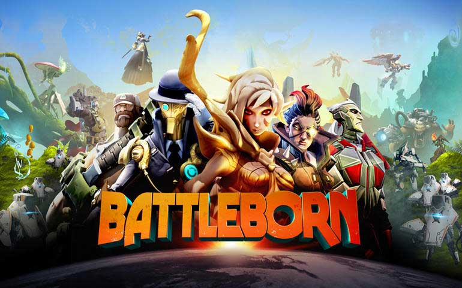
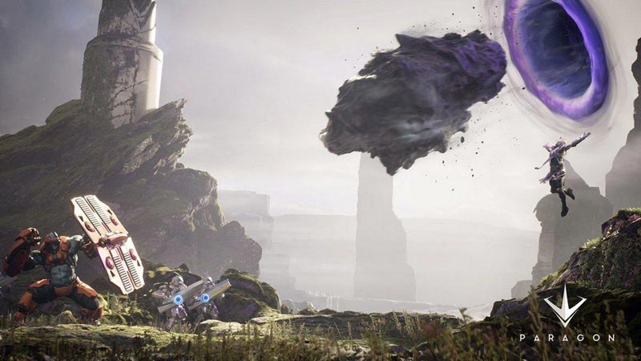
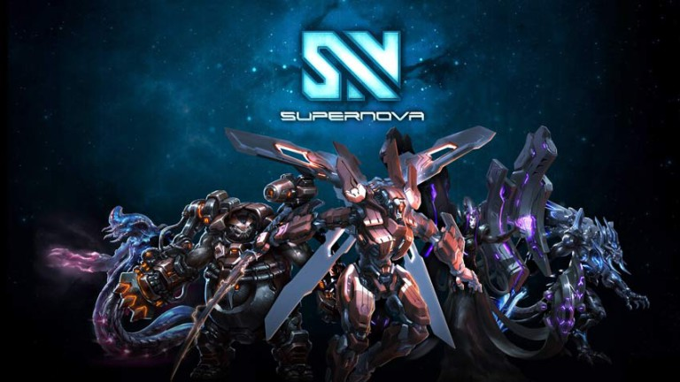
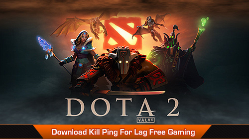

Multiplayer online battle arena (MOBA), also known as action real-time strategy (ARTS), is a genre of strategy video games that originated as a subgenre of real-time strategy, in which a player controls a single character in one of two teams.
Battleborn is the new kid on the block. Bringing in the element of FPS to the MOBA scene, something that is starting to get a lot of popularity, Battleborn is among the very few MOBA games that have taken the tough task of being an FPS MOBA. From the creators of Borderlands and Brother in Arms, Battleborn will look quite similar to people who have every played Smite, except there are no gods this time around. Having a big name behind its back, Battleborn is definitely going to be among the Top MOBA games in the times to come.
Paragon is an upcoming third person MOBA game from Epic Games. Players will fight in 5v5 battles using skill based combat mechanics with different heroes having unique abilities to play with. We can give a plus to the game already just knowing the game developers of Paragon are the ones who created Unreal Tournament. Another unique addition to the game is card collections. In paragon, players can earn cards and manage their deck which can further be used to implement various strategies and plans in battles.
Supernova brings back the old school MOBA thing back with a slight modification from the future. From the looks of the game, you may see Supernova as some updated version of Starcraft with better graphics. Things however, are a lot more interesting once you actually start getting a hold of the game. What’s unique about Supernova is the value it gives to the most underrated thing in any MOBA, Creeps. Supernova emphasizes a bit more on your creeps giving you the power to own you opponents not just with spells but through effective macroing as well. Not any Top MOBA has ever taken the liberty to do what Supernova has done and that is why many have fingers crossed for this upcoming MOBA.
With the overgrowing competition in MOBA scene, gamers now have a wide variety of MOBA games to choose from based on the game play offered by the MOBA game. Many gamers tend to lean towards free MOBA games; however, this certainly doesn’t mean that paid MOBA games are not worth trying.
This game tops the chart of best MOBA games out there. The reason? Well, League of Legends (LoL) has generated $1 billion in revenue in 2014. And, it’s not just the money that propels it to the top of the charts. It’s more to do with the game play and experience that League of Legends provides to players through PvP format.
A team of 5 players battle 5 other players to achieve victory over the other. Launched in the year 2009, League of Legends was created by a developer that originally played a huge role in creating the infamous mod DOTA from Warcraft 3. As of now, League of Legends has, on average, 25 million users per day.
Each player chooses from over 123 different characters aka “champions” and gradually enhances their abilities and skills as the game goes on. League of Legends has different modes; however, the most played are the normal matches in which a team’s goal is to destroy the Nexus of the enemy team. League of Legends is also a sough-after competitive game with a prize pool of more than $2 million in 2014. League of Legends is a MUST play game for any MOBA gamer.
Defense of the Ancients 2 or Dota 2 takes the second spot on our list of best MOBA games. Being a competitive game like LoL, Dota 2 tops the chart of the games with biggest prize pools with $10 million in 2014. Dota 2 is the sequel of the original game mod DotA that was released as a map created by Icefrog. It was a huge hit with gamers and it started to be played on a professional level.
With even better graphics and game play than the prequel, Dota 2 is a game with a fan following of millions. Continuous updates and patches allow the game to hold on to its competitive edge and excitement. With a pool of 110 heroes to choose from, the players can create different strategies and combinations to overcome their enemy team. Even if you do not consider yourself a competitive gamer, Dota 2 is something you can’t get enough of.